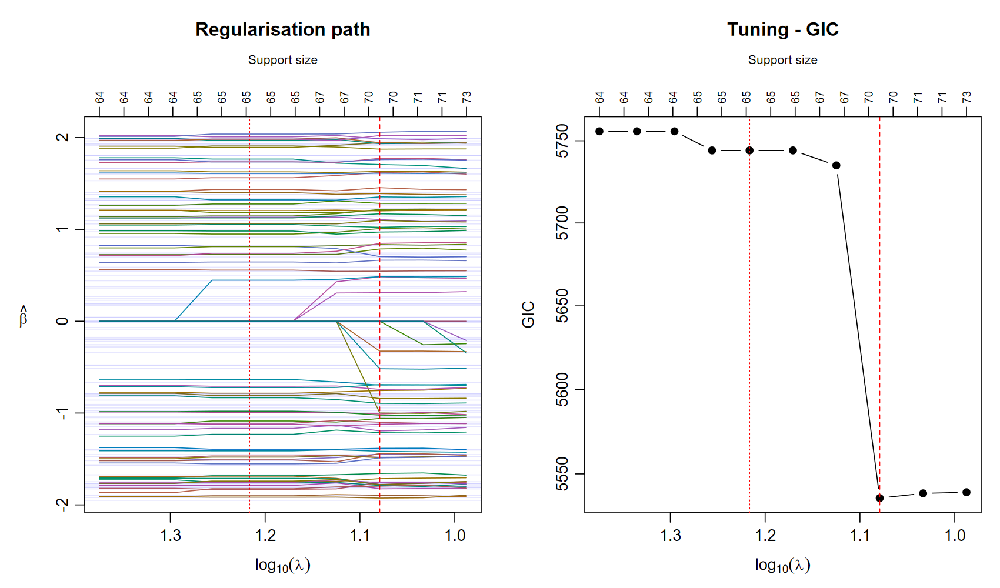
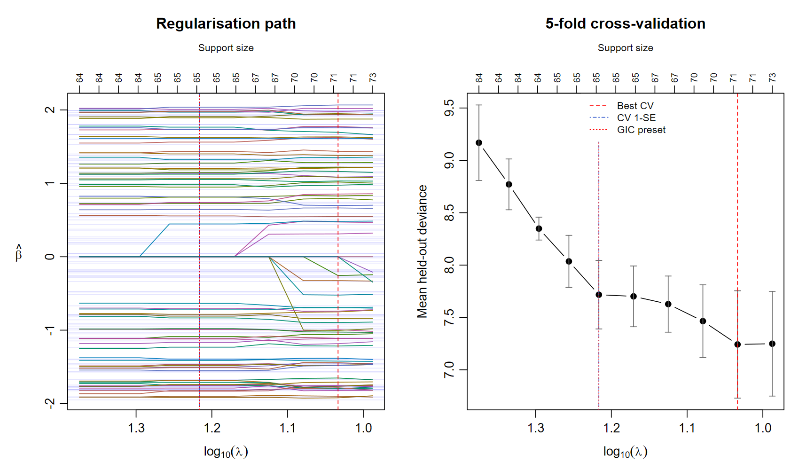

The example below has 1,000 observations, 5,000 predictors and 100 nonzero coefficients of either sign. It shows a rich coefficient path while retaining a genuinely sparse underlying model.
library(L0glm)
sim <- simul("normal", n=1000L, p=5000L, n_nonzero=100L, seed=42L,
options=list(beta_range=c(-2, 2)))
X <- sim$X
y <- sim$yA preset or a tuned path
For a single response the sparse-selection target is
-2\ell(\beta) + \lambda\,\|\beta\|_0.
A preset is often a very effective starting point. Searching a path lets the data choose among the candidate sparse models.
| Preset | Penalty per selected coefficient |
|---|---|
"aic" |
2 |
"bic" |
\log n |
"gic" |
\log p\,\log\log n |
"ebic" |
\log n + 2\gamma_{\rm EBIC}\log p |
"mbic" |
\log(np^2/16) |
Here p counts selectable predictors, excluding
intercepts and mandatory terms. The information-criterion
reference gives the parameter-count conventions and literature,
including Fan & Tang’s
GIC.
gic <- L0glm.tune(X, y, family=gaussian(), tune="gic", nlambda=10L,
prop_range=.25, relaxed=TRUE, coefs.true=sim$beta_true, plot=TRUE)
c(lambda_best=gic$lambda_best, lambda_preset=gic$lambda_preset)
The grid focuses on the preset. Use prop_range=1 to
explore the full numerical range. The preset often already gives an
excellent model, so detailed path tuning can be reserved for cases where
it offers a useful improvement.
| Method | GIC | TP | FP | FN | TN | F1 | MCC |
|---|---|---|---|---|---|---|---|
| GIC preset | 5744 | 65 | 0 | 35 | 4900 | 0.788 | 0.803 |
| Tuned GIC | 5536 | 70 | 0 | 30 | 4900 | 0.824 | 0.834 |
| CV minimum | 5539 | 71 | 0 | 29 | 4900 | 0.830 | 0.840 |
| CV one-SE | 5744 | 65 | 0 | 35 | 4900 | 0.788 | 0.803 |
Five-fold cross-validation
CV selects the penalty with the lowest mean held-out deviance. Whole rows are held out, including all response channels. Preprocessing, screening and estimated distribution parameters use the training observations in each fold.
set.seed(10)
folds <- sample(rep(1:5, length.out=nrow(X)))
cv <- L0glm.tune(X, y, family=gaussian(), tune="cv", nfolds=5L,
nlambda=10L, prop_range=.25, foldid=folds, relaxed=TRUE,
coefs.true=sim$beta_true, plot=TRUE)
The curves use a reversed log10(lambda) axis: strong
regularization is on the left, and support sizes appear above the
panels. CV error bars show one standard error.
c(lambda_best=cv$lambda_best, lambda_1se=cv$lambda_1se,
lambda_preset=cv$lambda_preset)
predict(cv$fit_1se, X[1:5, , drop=FALSE], type="response")fit_best and fit_1se are full-data fits.
The one-SE rule chooses the largest lambda with mean deviance within one
SE of the minimum. The GIC preset remains available through
lambda_preset for comparison.
Random, contiguous and Venetian-blind folds
Without foldid, folds are randomly assigned. Supply a
vector to choose a design:
# Five contiguous blocks
folds <- rep(1:5, length.out=nrow(X))[order(rep(1:5, length.out=nrow(X)))]
# Venetian blind: odd and even observations alternate
folds <- rep(1:2, length.out=nrow(X))
cv <- L0glm.tune(X, y, family=gaussian(), tune="cv",
foldid=folds, nlambda=10, relaxed=TRUE)For time-dependent observations, choose folds that reflect how predictions will be used. Reserve an independent test set when measuring final predictive accuracy.
Compare methods
sparseglm() supplies one comparison interface for L0glm,
ABESS, L0Learn, LASSO, relaxed LASSO, adaptive variants, MCP and SCAD
where supported.
comparison <- sparseglm(X, y, family=gaussian(),
method=c("L0glm", "abess", "lasso", "relaxed_lasso"),
tune="cv", nfolds=5, foldid=sample(rep(1:5, length.out=nrow(X))), nlambda=10)
L0glm.metrics(comparison)method="all" expands to supported methods for the
requested model. The benchmark article
reports complete fitting and tuning times.